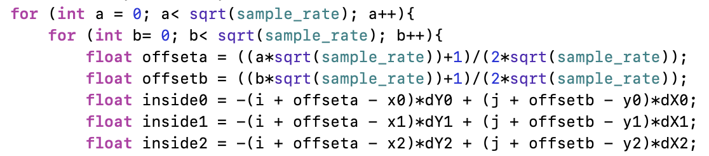

Overview
This project was a fun introduction to the complex realm of computer graphics! In this project we mainly focused on applying linear algebra and other mathematical principles to manipulate triangles, pixels, colors, and textures. We started from learning to "draw" a single triangle and advanced to being able to map different textures onto a surface. We explored different ways to sample pixels as well as different ways to transform an object. Ultimately with the help of the skeleton code we were able to bring to life some very awesome graphics. It is amazing what you can create with just a few triangles!
Section I: Rasterization
Part 1: Rasterizing single-color triangles
Given three (x,y) points and a 2D array containing the color value of each pixel, we can rasterize a triangle!
First I found the minimum and maximum x and y values in order to establish a bounding box. By iterating only through pixels in the bounding box, I can ignore irrelevant pixels. For each pixel within this bounding box, I checked if the center of the pixel was inside the triangle.
We can determine what side of a line a point is on using linear algebra. If the dot product between the point we are looking at and each of the three lines of the triangle are the same sign (all positive or all negative), then that point is inside the triangle. If the point is in the triangle, we can go ahead and fill it with the given color by calling samplebuffer[j][i].fill_pixel(color);
Part 2: Antialiasing triangles
Supersample is helpful because we are able to lessen the jaggies seen in part 1 and make our shapes look more cohesive. Supersampling takes samples from a pixel's subpixels and fills the entire pixel with a weighted average of subpixel colors. You can see in the screenshots of basic/test4.svg below that the corners and edges of the triangles are made of pixels with various shades of a color, but the overall look is more smooth and less rigid.

|
|
|
I implemented supersampling by creating two more for-loops within my original for-loops from part 1. Now instead of just iterating through all the pixels within the bounding box, we are iterating through each pixel AND each of its subpixels. From there another thing I had to add was an offset value so that I could look at the center of each subpixel, and then calculate the average of the subpixels' colors in drawrend.h get_pixel_color()
|

|
|
Part 3: Transforms
For Part 3 we used matrix algebra to implement the three types of transforms: Scale, Rotate, and Translate.
|
|
|
I wanted to make my robot do a "Pineapple jump." A pineapple jump is something my friends and I made up back when I was cheerleading. To do a pineapple jump, one must jump up with their hands above their heads, toes together, and knees bent. In order to make my robot look like its doing a pineapple jump, I had to mainly toggle around with the rotation and transformation of its arms and legs. I scaled its arms to be longer so that they could be closer to touching and also scaled its head to be bigger because I thought it looked cute like that.
Section II: Sampling
Part 4: Barycentric coordinates
Barycentric coordinates give us the location of a point relative to the three vertices of a triangle. If we have a triangle with vertices A, B, and C, then the variable alpha would be the proportional distance to A, beta the proportional distance to B, and gamma the proportional distance to C. Then, a point (x,y) inside the triangle can also be described as alpha*A + beta*B + gamma*C. By calculating these proportions we can use weighted sums to calculate the color of a pixel.
|
|
|
On the right side is the result of a svg file I made called TriangleColorWheel.svg. I created a triangle with points (0,0), (0,200), and (200,200) with one red vertex, one green vertex, and one blue vertex. Using barycentric coordinates, each point inside the triangle has a specific amount of "redness," "blueness," and "greenness," depending on its distance from each vertex. As you can see the result these weighted sums of colors is a smoothly blended color triangle.
Part 5: "Pixel sampling" for texture mapping
When we apply pixel sampling to texture mapping, we convert our (x,y) coordinates to barycentric coordinates and end up with (u,v) coordinates on our texture image. Now that we have a point on our texture image, we have to decide how we want to retrieve the color.
For Nearest-pixel sampling, we simply round our point to the nearest pixel in the texture uv plane (a texel), and return that point's color. So for example in the photo above, the red dot being our point, we would return the color of texel u11, the nearest texel.
Bilinear sampling is a little more complicated in that we have to find the weighted average (linear interpolation) of the four nearest texels using fractional offsets s & t, like in the image above.
Below is an example in which bilinear sampling clearly defeats nearest sampling. Like mentioned before, a lower sample rate creates more jaggies. In this example, the grid in the image has a lot of inconsistencies where there should be a continuous line. Bilinear sampling can be useful in this case because it creates a sort of blurred effect over the jaggies and makes it less noticeable. Therefore, the difference in quality between bilinear and nearest sampling would be the largest when jaggies and other distortions are the most obvious.
|
|
|
|
|
|
Part 6: "Level sampling" with mipmaps for texture mapping
Level sampling is sampling from mipmap levels instead of just the original texture. We do this because using different levels allows us to get a more accurately sized texture, reducing distortion.
First we find the barycentric coordinates of (x+1,y) and (x,y+1). We can then describe how far away the points (x+1,y) and (x,y+1) are on the texture plane and use that to determine the mipmap level. Since this calculation usually gives us an answer in between two integer levels, we have the option to round to the nearest level or use linear interpolation to find the weighted average (bilinear level sampling).
Here is my custom png. I ran it with the texture from texmap/test5.svg with all four combinations of one of L_ZERO and L_NEAREST with one of P_NEAREST and P_LINEAR.
|
|
|

|
|
While bilinear level sampling is the slowest, it is the best at antialiasing. Level 0 sampling is faster, but is not as good at antialiasing. Likewise, bilinear sampling is slower but better at antialiasing, and nearest pixel sampling is the opposite.
Section III: Art Competition
If you are not participating in the optional art competition, don't worry about this section!